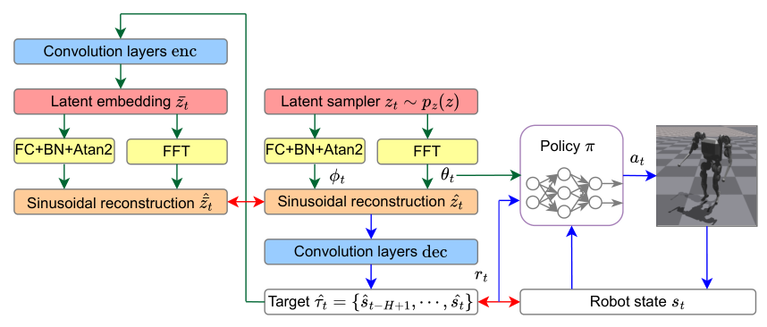
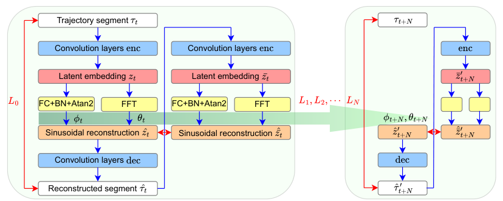
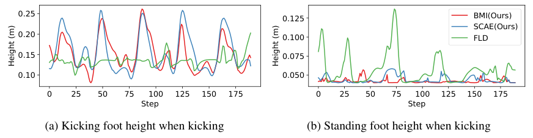
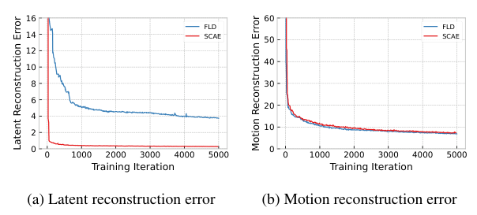
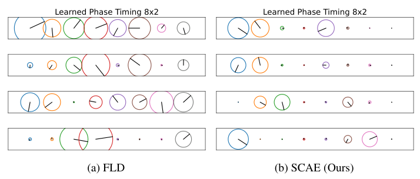
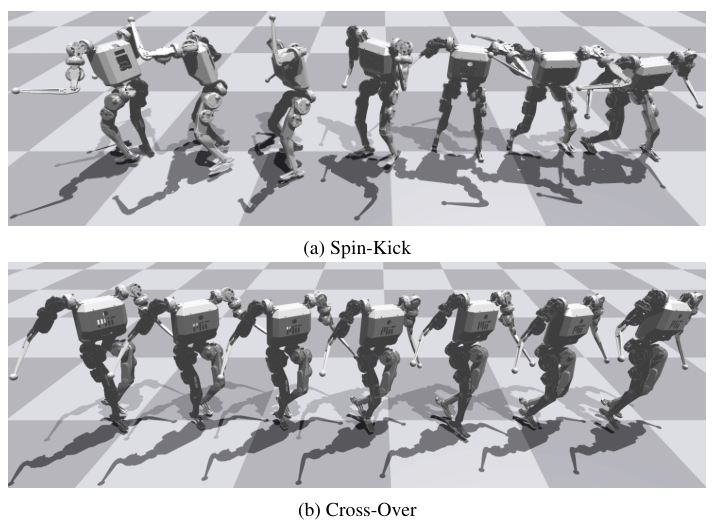

Background & Motivation
人類 MoCap 經運動學 retargeting 後,對關節自由度與扭力都受限的人形機器人常常物理上做不到;硬拿來追蹤會拖累 RL 策略。BMI 的解法是不再把參考動作當成固定答案:先用自洽自編碼器 SCAE 學出稀疏、週期性的 latent 動作空間,再以bi-level 交替最佳化同時更新「追蹤策略」與「產生參考動作的 decoder」——decoder 被拉向機器人實際跑得出來的軌跡,另以 latent 一致性項把它錨在原始動作模式附近。在 MIT Humanoid 模擬中,kick 的踢腿時間比例由 64.4% 提升到 71.3%。
Kinematically retargeted human MoCap is often physically infeasible for humanoids with limited joints and torques, and tracking it drags the RL policy down. BMI stops treating the reference motion as a fixed answer: it first learns a sparse, periodic latent motion space with a self-consistent auto-encoder (SCAE), then runs a bi-level alternating optimization that updates both the tracking policy and the decoder that generates references — the decoder is pulled toward trajectories the robot actually produces, while a latent-consistency term anchors it to the original motion patterns. On a simulated MIT Humanoid, the kicking-time ratio rises from 64.4% to 71.3%.

如果只有 30 秒In 30 seconds
- 問題 — 人與機器人的形態不同(關節自由度、力矩上限),所以運動學 retarget 後的 MoCap 常物理不可行;把它們放進訓練集會讓策略學壞。既有做法要嘛靠已知動力學做軌跡最佳化(複雜、需領域知識),要嘛直接把做不到的動作過濾掉、或只追上半身。
- Problem — Humans and robots differ in morphology (degrees of freedom, force limits), so kinematically retargeted MoCap is often physically infeasible, and including it hurts the policy. Existing fixes either run trajectory optimization with a known dynamics model (complex, domain-specific) or simply filter out infeasible clips / track only the upper body.
- 方法 — 三階段:(i) SCAE:在 FLD 上加「latent 重建誤差」,讓「解碼後再編碼」回到同一個 latent;(ii) 從 latent 取樣、解碼出參考,用 PPO 預訓練追蹤策略;(iii) bi-level fine-tuning:凍結 encoder,交替更新 policy(追 decoder 的參考)與 decoder(貼近機器人軌跡 + latent 一致性)。
- Method — Three stages: (i) SCAE: add a "latent reconstruction error" to FLD so that decode-then-encode returns the same latent; (ii) sample latents, decode references, and pre-train a tracking policy with PPO; (iii) bi-level fine-tuning: freeze the encoder and alternate between updating the policy (track the decoder's reference) and the decoder (move toward robot trajectories + latent consistency).
- 結果 — SCAE 的 latent 重建誤差遠低於 FLD,動作重建精度相當;kick 時間 64.4%→71.3%、踢腿高度 0.157→0.164 m、站立腳更穩;jump 時間 FLD 32.5% → SCAE 36.2% / BMI 35.2%。全部在 Isaac Gym 模擬中;spin-kick、cross-over 仍失敗。
- Results — SCAE has far lower latent reconstruction error than FLD with comparable motion reconstruction; kick time 64.4%→71.3%, kick height 0.157→0.164 m, a steadier standing foot; jump time FLD 32.5% → SCAE 36.2% / BMI 35.2%. All in Isaac Gym simulation; spin-kick and cross-over still fail.
領域脈絡Field context
用人類 MoCap 當參考軌跡訓練人形機器人有兩條主線:一是 GAIL / AMP 式的對抗風格模仿——不用定義「像不像」的距離,但 min-max 訓練不穩、樣本效率差;二是 DeepMimic 式的直接追蹤——穩定好訓,但成敗取決於參考品質,而 retarget 後的參考常帶雜訊、對機器人物理上不可行。
There are two main lines for training humanoids on human MoCap references: GAIL / AMP-style adversarial style imitation — no need to define a similarity distance, but min-max training is unstable and sample-inefficient; and DeepMimic-style direct tracking — stable and easy to train, but only as good as the reference, and retargeted references are often noisy and physically infeasible for the robot.
動畫領域在 AMASS 等大資料集上的大規模追蹤很成功,但作者指出那部分歸功於不真實的模擬角色:多達 69 DoF、力矩無上限、甚至有 residual force 外力輔助——原則上什麼參考都追得到。真實人形機器人則 under-actuated、扭力受限。「參考不可行」傳統上屬於 motion retargeting 的問題:IK retargeting 看起來對、但不保證物理可行;物理式 retargeting 用軌跡最佳化 + 已知動力學(例如 DOC 的可微最佳控制,本身也是 bi-level),但需要動力學模型與人工接觸約束,難以推廣到不同機器人。
Large-scale tracking on datasets like AMASS works well in animation, but the authors note this is partly owed to unrealistic simulated characters: up to 69 DoF, unlimited force, even assistive residual forces — able, in principle, to track any reference. Real humanoids are under-actuated and torque-limited. "Infeasible references" is classically a motion retargeting problem: IK retargeting looks right but guarantees no physical feasibility; physics-based retargeting uses trajectory optimization with known dynamics (e.g., DOC, differentiable optimal control, itself bi-level), but needs a dynamics model and hand-specified contact constraints, so it is hard to generalize across robots.
[導讀補充] BMI 的精神是把 retargeting 從「RL 之前的前處理」搬進「RL 迴圈之內」:不寫動力學方程,而是讓在模擬器裡跑的策略本身充當「物理可行性的 oracle」——機器人跑得出來的軌跡,本來就是可行的。代價是:可行性的定義從「滿足機器人動力學」變成「這個 policy 在這個模擬器裡追得到」。
[guide note] BMI's spirit is to move retargeting from "pre-processing before RL" into "inside the RL loop": instead of writing dynamics equations, the policy running in simulation serves as the physical-feasibility oracle — whatever the robot actually executes is feasible by construction. The price: feasibility shifts from "satisfies the robot's dynamics" to "this policy can track it in this simulator."
核心洞見 · KEY INSIGHTSKEY INSIGHTS
這篇值得帶走的不是 kick 多了幾個百分點,而是下面這幾個觀念轉變:
What is worth taking away is not a few extra kick percentage points, but these shifts in mindset:
- 參考動作是可協商的。 傳統管線把 retarget 後的參考當成「標準答案」;BMI 把它當成可學習的變數,與策略共同最佳化。
- The reference motion is negotiable. Classic pipelines treat the retargeted reference as the answer key; BMI treats it as a learnable variable co-optimized with the policy.
- 機器人 rollout = 免費的「可行」樣本。 decoder 往機器人實際軌跡 \(s_t\) 靠,等於往可行域靠——不需要顯式動力學模型或人訂約束。
- Robot rollouts are free "feasible" samples. Pulling the decoder toward the robot's actual trajectory \(s_t\) means pulling it toward the feasible set — no explicit dynamics model or hand-made constraints needed.
- 但要防「老師抄學生」。 只最小化 \(|\hat s_t-s_t|^2\) 的話,decoder 最省事的解就是直接複製機器人目前(可能很爛)的動作;latent 一致性項 \(\beta|\hat{\bar z}_t-\hat z_t|^2\) 才是讓參考保有原始動作模式的錨。
- But guard against "the teacher copying the student." Minimizing only \(|\hat s_t-s_t|^2\), the decoder's laziest solution is to copy whatever (possibly poor) motion the robot currently makes; the latent-consistency term \(\beta|\hat{\bar z}_t-\hat z_t|^2\) is the anchor that keeps the original motion patterns.
- 錨要有效,latent 空間得「自洽」。 SCAE 讓 \(\mathrm{enc}\circ\mathrm{dec}\) 在 latent 上近似恆等,latent 距離才成為有意義的「動作模式距離」,且不犧牲動作重建精度。
- For the anchor to work, the latent space must be self-consistent. SCAE makes \(\mathrm{enc}\circ\mathrm{dec}\) approximately the identity in latent space, so latent distance becomes a meaningful "motion-pattern distance" — without sacrificing motion reconstruction.
- 表徵本身就會影響策略學習。 作者自己也意外:只換成 SCAE latent(還沒 bi-level)就讓 jump 時間 32.5%→36.2%,且是三者最佳——稀疏的目標條件讓 policy 更好學。換句話說,不是所有增益都來自 bi-level。
- The representation itself shapes policy learning. To the authors' own surprise, merely switching to the SCAE latent (before any bi-level step) lifts jump time 32.5%→36.2%, the best of the three — a sparser goal conditioning is easier to learn from. In other words, not all the gain comes from bi-level.
Problem Diagnosis
現況 vs 痛點Status quo vs pain points
| 現有做法Existing approach | 它的痛點Its pain point |
|---|---|
| 對抗式風格模仿Adversarial style imitation GAIL, AMP, HumanMimic | 不需定義相似度,但 min-max 訓練不穩、樣本效率差。No similarity metric needed, but min-max training is unstable and sample-inefficient. |
| 直接追蹤參考Direct reference tracking DeepMimic, FLD | 參考常帶雜訊、因形態差異(力矩、關節極限)物理不可行;把它們放進資料集會讓策略退化。References are noisy and, due to embodiment gaps (force and joint limits), physically infeasible; including them degrades the policy. |
| 動畫角色大規模追蹤Large-scale character tracking PHC, PULSE + AMASS | 角色 69 DoF、力矩無上限、有 residual force 輔助——能否轉移到真實機器人不明。Characters with 69 DoF, unlimited torque, residual-force assistance — unclear whether it transfers to realistic robots. |
| 物理式 retargetingPhysics-based retargeting 軌跡最佳化,例:DOCtrajectory optimization, e.g. DOC | 需已知機器人動力學與人工接觸約束,問題複雜、難跨機器人泛化。Needs known robot dynamics and manual contact constraints; complex and hard to generalize across robots. |
核心問題:能否在不依賴顯式動力學模型的前提下,讓參考動作自己變得物理可行,同時不失去人類 MoCap 裡想要的動作模式?
The core question: can reference motions be made physically consistent without an explicit dynamics model, while keeping the desired motion patterns of the human MoCap?
Gap 表 — 誰缺什麼,BMI 怎麼補Gap table — who lacks what, and how BMI fills it
| 方法Method | 如何處理不可行參考How it handles infeasible refs | BMI 的回應BMI's answer |
|---|---|---|
| H2O [4] | 用 privileged 模擬 imitator 把做不到的動作過濾掉——資料直接丟棄。A privileged simulated imitator filters out infeasible motions — the data is thrown away. | 把不可行動作「修」成可行,保留資料價值。Repair infeasible motions into feasible ones, keeping the data. |
| ExBody [20] | 只模仿上半身,下半身改追 base 前進速度。Imitates only the upper body; the lower body tracks a base forward velocity. | 全身參考一起修正,下半身動作(kick、jump)仍是模仿目標。Whole-body references are corrected together; lower-body skills (kick, jump) remain imitation targets. |
| FLD [8] | 參考離訓練分佈太遠時 fallback 回預設動作;latent 對細節雜訊敏感、不自洽。Falls back to default motions when a reference is far from training data; its latent is sensitive to nuance/noise and not self-consistent. | SCAE 自洽 latent + decoder 微調。Self-consistent SCAE latent + decoder fine-tuning. |
| DOC [15] | 同為 bi-level:交替最佳化 retargeting 參數與機器人軌跡,但需動力學模型與人訂接觸約束。Also bi-level: alternates retargeting parameters and robot trajectories, but needs a dynamics model and hand-defined contact constraints. | 純資料驅動:RL policy 的模擬 rollout 取代動力學模型。Purely data-driven: simulated RL rollouts replace the dynamics model. |
[導讀補充] 注意 BMI 的「物理可行」是操作性定義:能被「目前這個 policy、在這個模擬器裡」追到的軌跡。它比軌跡最佳化的「滿足動力學方程與扭力約束」便宜得多,但也把參考綁定在特定 policy 與特定模擬器上——這是後面 CRITIQUE 的伏筆。
[guide note] Note that BMI's "physically consistent" is an operational definition: trajectories that "this policy, in this simulator" can track. That is far cheaper than trajectory optimization's "satisfies the dynamics equations and torque limits," but it ties the reference to a specific policy and simulator — a seed for the CRITIQUE tab.
Core Method
三階段管線The three-stage pipeline
預備知識:FLD 的週期性 latent 動態Preliminaries: FLD's periodic latent dynamics
輸入是長度 \(H\) 的軌跡片段 \(\tau_t=(s_{t-H+1},\dots,s_t)\in\mathbb{R}^{d\times H}\)。encoder 把它嵌入 \(c\) 個 latent channel \(z_t\in\mathbb{R}^{c\times H}\);沿襲 PAE(DeepPhase),用可微分 FFT 層取出每個 channel 的頻率 \(f_t\)、振幅 \(a_t\)、偏移 \(b_t\),相位 \(\phi_t\) 則由 FC 層 + atan2 算出:
The input is a trajectory segment of length \(H\): \(\tau_t=(s_{t-H+1},\dots,s_t)\in\mathbb{R}^{d\times H}\). The encoder embeds it into \(c\) latent channels \(z_t\in\mathbb{R}^{c\times H}\); following PAE (DeepPhase), a differentiable FFT layer extracts each channel's frequency \(f_t\), amplitude \(a_t\) and offset \(b_t\), while the phase \(\phi_t\) comes from an FC layer + atan2:
latent 再用正弦函數重建(\(T\) 是含 \(H\) 個等距取樣的已知時間窗):
The latent is then reconstructed by a sinusoid (\(T\) is a known time window with \(H\) evenly spaced samples):
FLD 的貢獻是多步前向預測:假設接下來 \(N\) 個片段共享同一組 \((f_t,a_t,b_t)\),只有相位依 \(\phi_{t+i}\approx\phi_t+if_t\Delta t\) 前進,於是
FLD's contribution is multi-step forward prediction: assume the next \(N\) segments share the same \((f_t,a_t,b_t)\) and only the phase advances as \(\phi_{t+i}\approx\phi_t+if_t\Delta t\), so
\(\alpha\) 是衰減係數(本文取 \(\alpha=1.0\)),\(|\cdot|\) 是歐氏距離。直覺:一段動作被壓成「每個 channel 一個正弦波」,而「時間推進」只是在轉相位——這就是 latent dynamics。
\(\alpha\) is a decay factor (\(\alpha=1.0\) here) and \(|\cdot|\) the Euclidean distance. Intuition: a motion is compressed into "one sinusoid per channel," and "advancing time" just rotates the phase — that is the latent dynamics.
Stage 1 — SCAE:讓 latent「解碼再編碼」回到自己Stage 1 — SCAE: make the latent survive decode-then-encode

作者觀察到 FLD 的一個毛病:動作重建誤差小,不代表解碼後的動作在 latent 空間仍接近原 latent——latent 過度貼合細節與雜訊。這對 BMI 很要命:fine-tuning 時這些細節本來就會被改掉(為了變可行),若 latent 對它們敏感,latent 錨就錨不住。SCAE 的解法是加一項 latent 重建誤差:
The authors spot a flaw in FLD: small motion-reconstruction error does not mean the decoded motion maps back close to the original latent — the latent overfits nuances and noise. That is fatal for BMI: fine-tuning is supposed to change exactly those nuances (to become feasible), so a latent sensitive to them cannot serve as an anchor. SCAE adds a latent reconstruction error:
\(\hat{\bar z}'_{t+i}\) 是把 \(\hat\tau'_{t+i}\) 再經 encoder、FFT 層、正弦重建層得到的 latent。SCAE 訓練時 \(\beta=1\),在整個資料集上評估此損失。完美 decoder 會讓 latent 誤差為零,但實務上達不到;而且只最小化動作誤差時,latent 誤差並不會跟著被壓低(見 04 的 Fig.3)。類似想法曾用於 VAE(AVAE),但作者稱尚未用在動作生成的確定性 AE。
\(\hat{\bar z}'_{t+i}\) is obtained by passing \(\hat\tau'_{t+i}\) through the encoder, the FFT layer and the sinusoidal reconstruction layer. SCAE uses \(\beta=1\) and evaluates the loss over the whole dataset. A perfect decoder would zero the latent error, which is unachievable in practice; and minimizing only the motion error does not drive the latent error down (see Fig.3 in tab 04). A similar idea exists for VAEs (AVAE), but the authors say it had not been used in deterministic auto-encoders for motion generation.
Stage 2 — 預訓練追蹤策略Stage 2 — Pre-training the tracking policy
不直接從原始資料集抽軌跡,而是從 SCAE 訓練時收集的 latent buffer \(p_z(z)\) 取樣,經 FC/FFT 得到 \((\phi_t,f_t,a_t,b_t)\)。相位不用學到的 \(\phi_t\),而是從固定範圍均勻抽一個初相 \(\phi_0\in\mathbb{R}^c\),再依 latent 動態推進;整個 episode 維持同一組 \(\theta=(f,a,b)\):
Instead of sampling trajectories from the raw dataset, it samples from the latent buffer \(p_z(z)\) collected during SCAE training and obtains \((\phi_t,f_t,a_t,b_t)\) through the FC/FFT layers. Rather than the learned \(\phi_t\), an initial phase \(\phi_0\in\mathbb{R}^c\) is sampled uniformly from a fixed range and advanced by the latent dynamics; \(\theta=(f,a,b)\) stays fixed for the episode:
最新一幀 \(\hat s_t\) 就是當下的追蹤目標,用 PPO 訓練。policy 的觀測是 63 維本體感知(base 線/角速度、重力投影、18 個關節角與角速度、上一個動作)加上 latent 參數 \(\sin\phi,\cos\phi,f,a,b\)(各 8 維)當作目標資訊,共 103 維;動作是 18 個關節的 PD 目標角。獎勵 \(r=r_T+r_R\):
The latest frame \(\hat s_t\) is the tracking target at the current step; training uses PPO. The policy observes 63-D proprioception (base linear/angular velocity, projected gravity, 18 joint positions and velocities, last action) plus the latent parameters \(\sin\phi,\cos\phi,f,a,b\) (8-D each) as goal information, 103-D in total; actions are PD targets for 18 joints. The reward is \(r=r_T+r_R\):
追蹤權重全為 1.0;溫度 \(\sigma_v=\sigma_w=0.2\)、\(\sigma_g=\sigma_{q_{\text{leg}}}=\sigma_{q_{\text{arm}}}=1.0\);正則權重 \(w_{ar}=-0.01\)、\(w_{qa}=-2.5\times10^{-7}\)、\(w_{qT}=-10^{-5}\)(動作變化率、關節加速度、扭力)。[導讀補充] 注意追蹤項只有 base 速度、重力方向與關節角——沒有 base 位置、也沒有足端位置項;而結果卻用足端高度來評估 kick。
All tracking weights are 1.0; temperatures \(\sigma_v=\sigma_w=0.2\), \(\sigma_g=\sigma_{q_{\text{leg}}}=\sigma_{q_{\text{arm}}}=1.0\); regularization weights \(w_{ar}=-0.01\), \(w_{qa}=-2.5\times10^{-7}\), \(w_{qT}=-10^{-5}\) (action rate, joint acceleration, torque). [guide note] The tracking terms cover only base velocities, gravity direction and joint angles — no base position and no foot position term — yet the kick is evaluated by foot height.
作者認為用 latent 當目標有兩個好處:(i) 可在 latent 內插出動作過渡與新動作;(ii) latent 目標更精簡、聚焦主要模式而非細節,對策略學習有利。
The authors argue latent goals help in two ways: (i) interpolating latents yields transitions and new motions; (ii) a latent goal is more concise, focusing on essential patterns rather than nuances, which helps policy learning.
Stage 3 — Bi-level fine-tuning(本文的技術核心)Stage 3 — Bi-level fine-tuning (the technical core)
凍結 convolutional encoder 與 FC、BN 層,只讓 decoder 與 policy 交替更新。上層(decoder)要讓參考貼近機器人「最佳回應策略」下的實際狀態,並受 latent 一致性約束;下層(policy)照常學追蹤:
The convolutional encoder and the FC, BN layers are frozen; only the decoder and the policy are updated, alternately. The upper level (decoder) pulls the reference toward the robot's actual states under its best-response policy, subject to latent consistency; the lower level (policy) learns tracking as usual:
- \(|\hat s_t-s_t|^2\)(上層):機器人狀態 \(s_t\) 是在模擬器裡真的跑出來的,「依設計就是物理一致」;decoder 往它靠 = 參考往可行方向修。
- \(|\hat s_t-s_t|^2\) (upper): the robot state \(s_t\) is actually executed in simulation, so it is "physically consistent by design"; moving the decoder toward it = moving the reference toward feasibility.
- \(\beta|\hat{\bar z}_t-\hat z_t|^2\)(上層):修改後的參考再經(凍結的)encoder 編回 latent,必須仍等於原本取樣的 \(\hat z_t\)。作者稱這防止 decoder 退化成「直接複製機器人」的平凡解。
- \(\beta|\hat{\bar z}_t-\hat z_t|^2\) (upper): the modified reference, re-encoded by the (frozen) encoder, must still equal the originally sampled \(\hat z_t\). The authors claim this prevents the decoder from collapsing to the trivial solution of copying the robot.
- 下層寫成最小化追蹤誤差,實作上就是用 PPO 最大化上面的指數核追蹤獎勵。
- The lower level is written as tracking-error minimization; in practice it is PPO maximizing the exponential-kernel tracking reward above.
演算法 1(BMI)——外圈 \(k=1..K\):
Algorithm 1 (BMI) — outer loop \(k=1..K\):
- Policy learning(\(M_1\) 次):取樣 latent 目標 \(z_i\sim p_z(z)\),解碼出目標狀態 \(\hat\tau_t\),rollout 機器人軌跡 \(\tau_i\)。
- Policy learning (\(M_1\) times): sample latent targets \(z_i\sim p_z(z)\), decode target states \(\hat\tau_t\), roll out robot trajectories \(\tau_i\).
- 把 \((z_i,\tau_i)\) 配對存進 buffer \(D\);用 PPO 依下層目標更新 \(\pi_{\theta_\pi}\)。
- Store \((z_i,\tau_i)\) pairs in buffer \(D\); update \(\pi_{\theta_\pi}\) with PPO under the lower objective.
- Decoder update(\(M_2\) 次):從 \(D\) 取樣 latent 與機器人軌跡,依上層目標以梯度更新 decoder。
- Decoder update (\(M_2\) times): sample latents and robot trajectories from \(D\); gradient-update the decoder under the upper objective.
BMI 超參數:\(\beta=200\)(為了讓 latent 與動作兩項量級相當,比 SCAE 的 \(\beta=1\) 大得多)、decoder 學習率 \(10^{-5}\)(低於 SCAE 訓練)、decoder 2 個 mini-batch / 1 epoch、最多 50 次 iteration、4096 個平行環境。作者坦言只試了少數幾組超參數。
BMI hyper-parameters: \(\beta=200\) (to balance the latent and motion terms; far larger than SCAE's \(\beta=1\)), decoder learning rate \(10^{-5}\) (lower than in SCAE training), 2 decoder mini-batches / 1 epoch, at most 50 iterations, 4096 parallel environments. The authors admit only a few hyper-parameter configurations were tried.
符號白話對照Symbols in plain words
| \(\tau_t,\ s_t\) | 長度 \(H=51\) 的軌跡片段;\(s_t\) 是時刻 \(t\) 的狀態(latent 模型用 27 維:base 線/角速度、重力投影、18 個關節角)。在 bi-level 式中 \(s_t\) 指機器人實際狀態。A trajectory segment of length \(H=51\); \(s_t\) is the state at time \(t\) (27-D for the latent model: base linear/angular velocity, projected gravity, 18 joint angles). In the bi-level equation \(s_t\) is the robot's actual state. |
| \(\hat\tau_t,\ \hat s_t\) | decoder 產生的參考片段與其最新一幀(當下的追蹤目標)。The decoder's reference segment and its latest frame (the current tracking target). |
| \(z_t,\ \hat z_t\) | encoder 輸出的 latent(\(c=8\) channel)與其正弦重建版本。The encoder's latent (\(c=8\) channels) and its sinusoidal reconstruction. |
| \(\hat{\bar z}_t\) | 把解碼出的 \(\hat\tau_t\) 再編碼回去得到的 latent;與 \(\hat z_t\) 的差就是「自洽誤差」。The latent obtained by re-encoding the decoded \(\hat\tau_t\); its gap to \(\hat z_t\) is the "self-consistency error." |
| \(\phi_t,\ \theta_t=(f_t,a_t,b_t)\) | 每個 channel 的相位,以及頻率、振幅、偏移;\(\theta\) 在一個 episode 內固定,只有相位轉動。Per-channel phase, and frequency, amplitude, offset; \(\theta\) is fixed within an episode and only the phase rotates. |
| \(p,\ \hat p\) | latent → 週期參數(FFT + FC/atan2),與週期參數 → latent(正弦重建)。Latent → periodic parameters (FFT + FC/atan2), and periodic parameters → latent (sinusoidal reconstruction). |
| \(p_z(z)\) | SCAE 訓練時收集的「原始動作 latent」buffer,是取樣目標動作的來源。The buffer of original-motion latents collected during SCAE training; the source of sampled target motions. |
| \(N,\ \alpha,\ \beta\) | 多步預測長度(50)、衰減(1.0)、latent 重建權重(SCAE 為 1,BMI 為 200)。Multi-step prediction length (50), decay (1.0), latent-reconstruction weight (1 in SCAE, 200 in BMI). |
| \(\theta_{\text{dec}},\ \theta_\pi\) | decoder 與 policy 的參數——bi-level 的上、下層變數。Decoder and policy parameters — the upper- and lower-level variables. |
Experimental Evidence
實驗設定Setup
機器人:MIT Humanoid,在 Isaac Gym 中保留原本的關節與力矩上限(18 個致動關節)。資料:沿用 FLD 的資料集(原出自 DeepMimic、人工 retarget),再加入 jump、kick、spin-kick、cross-over 四種困難動作,共 13 種動作、每種 10 條軌跡、每條 240 步,即 \(13\times10\times240=31200\) 個資料點。對照組:FLD(同樣的 reward),以及自己的 SCAE 預訓練(無 bi-level)。
Robot: MIT Humanoid in Isaac Gym, keeping its joint and force limits unchanged (18 actuated joints). Data: FLD's dataset (originally DeepMimic, manually retargeted) plus four hard motions — jump, kick, spin-kick, cross-over — 13 motions, 10 trajectories each, 240 steps each: \(13\times10\times240=31200\) data points. Comparisons: FLD (same reward) and the authors' own SCAE pre-training (no bi-level).
評估指標刻意不用對參考的 MSE——因為參考本身可能不可行——改用動作專屬量(踢腿時間比例、踢腿高度、跳躍時間比例)。
The metric deliberately avoids MSE to the reference — the reference itself may be infeasible — using motion-specific quantities instead (kick-time ratio, kick height, jump-time ratio).
主結果表 — 兩個困難動作(Table 1)Main results — two hard motions (Table 1)
| 動作(指標)Motion (metric) | FLD | SCAE (Ours) | BMI (Ours) |
|---|---|---|---|
| Kick (Time %) ↑ | 64.4 | 61.2 | 71.3 |
| Kick (Height m) ↑ | 0.157 | 0.152 | 0.164 |
| Jump (Time %) ↑ | 32.5 | 36.2 | 35.2 |
BMI 在 kick 的時間與高度上最好;但 jump 最好的是 SCAE 預訓練,BMI 反而略降(36.2→35.2)。也注意 SCAE 在 kick 上其實輸給 FLD(61.2 vs 64.4)——kick 的增益幾乎全部發生在 bi-level 階段。表中無標準差、無 seed 數。
BMI is best on kick time and height; but the best jump comes from SCAE pre-training, and BMI slightly drops it (36.2→35.2). Note also that SCAE actually trails FLD on kick (61.2 vs 64.4) — the kick gain happens almost entirely in the bi-level stage. No standard deviations or seed counts are reported.

Latent 動態模型:自洽、稀疏、結構化Latent dynamics model: self-consistent, sparse, structured


Fig.5(未截圖)以 PCA 視覺化 13 種動作的 latent 流形:原始動作的主成分雜亂;FLD 呈螺旋但結構不一;SCAE 在 13 種動作間呈現最一致的同心環結構——每個動作一個主要週期圓,半徑反映速度、頻率等高階特徵。附錄 Fig.9 在全部 13 種動作上重複了 Fig.4 的稀疏性觀察,Fig.10 顯示兩者的動作重建都很準。
Fig.5 (not cropped) visualizes the latent manifolds of the 13 motions via PCA: principal components of the raw motions are tangled; FLD forms spirals with inconsistent structure; SCAE shows the most consistent concentric-ring structure across all 13 motions — one primary period circle per motion, with radius reflecting high-level features such as velocity and frequency. Appendix Fig.9 repeats Fig.4's sparsity observation over all 13 motions, and Fig.10 shows both reconstruct motions accurately.
消融解讀Reading the ablations
| 拿掉 / 改變什麼What is removed / changed | 代價Cost | 證明了什麼What it proves |
|---|---|---|
| latent 重建項(\(\beta=0\),即 FLD)Latent term (\(\beta=0\), i.e. FLD) | latent 誤差 \(\approx 4\) vs \(\approx 0\)latent error \(\approx 4\) vs \(\approx 0\) | 自洽性來自這一項,動作重建不變。Self-consistency comes from this term; motion reconstruction unchanged. |
| \(\beta\) 掃描:0.1 / 1 / 5 / 10(Fig.8)\(\beta\) sweep: 0.1 / 1 / 5 / 10 (Fig.8) | 僅 \(\beta=10\) 時動作誤差略升only \(\beta=10\) slightly raises motion error | \(\beta=0.1\) 就足以改善 latent;\(\beta\in[0.1,5]\) 動作重建與 FLD 相當——SCAE 對 \(\beta\) 不敏感。\(\beta=0.1\) already improves the latent; \(\beta\in[0.1,5]\) matches FLD's motion reconstruction — SCAE is robust to \(\beta\). |
| 拿掉 bi-level(BMI → SCAE)Remove bi-level (BMI → SCAE) | kick 71.3→61.2%,0.164→0.152 mkick 71.3→61.2%, 0.164→0.152 m | bi-level 對 kick 有幫助;但 jump 反而 35.2→36.2%,不是一致性的提升。Bi-level helps kick; but jump goes 35.2→36.2% without it — not a uniform gain. |
| 換回 FLD latent(SCAE → FLD)Swap back to FLD latent (SCAE → FLD) | jump 36.2→32.5%;kick 61.2→64.4%jump 36.2→32.5%; kick 61.2→64.4% | latent 表徵本身會改變策略學習,但方向因動作而異。The latent representation itself changes policy learning, but the direction varies by motion. |
| [導讀補充] bi-level 但 \(\beta=0\)(無 latent 錨)[guide note] bi-level with \(\beta=0\) (no latent anchor) | — | 未做:「防止 decoder 複製機器人」這個關鍵主張沒有實驗支持。Not run: the key claim "the anchor prevents the decoder from copying the robot" has no experimental support. |
只在專案網站上的證據Evidence only on the project website
- 兩個 zero-shot sim-to-sim 實驗:機器人額外加 5 kg 質量塊,策略仍可運作。
- Two zero-shot sim-to-sim experiments: the policy still works with an extra 5 kg mass block on the robot.
- bi-level 前後解碼參考的對比影片:fine-tuned 的 stride 動作手臂擺幅變大,作者解讀為更符合機器人動力學。這是論文中唯一關於「參考被改成什麼樣」的描述,且只有定性。
- Videos of decoded references before and after bi-level fine-tuning: the fine-tuned stride shows larger arm swing, read by the authors as better consistency with robot dynamics. This is the paper's only description of how the reference changed, and it is qualitative.
- 在 latent 振幅、頻率之間內插,可生成運動學上一致的新動作。cross-over、stride、step 等動作的改善也只以影片呈現。
- Interpolating latent amplitude and frequency generates new kinematically consistent motions. Improvements on cross-over, stride, step are also shown only in videos.
實驗證明了什麼、沒證明什麼What the experiments do and do not prove
證明了:(1) latent 重建項能在不傷重建的前提下讓 latent 自洽、稀疏、結構化;(2) 在 MIT Humanoid 模擬中,BMI 讓 kick 從「沒真的踢」變成「踢得起來、站得穩」。
Proven: (1) the latent-reconstruction term makes the latent self-consistent, sparse and structured without hurting reconstruction; (2) in the MIT Humanoid simulation, BMI turns the kick from "not really kicking" into "kicking with a stable stance."
沒證明:修正後的參考離原始 MoCap 多遠、是否真的「物理可行」(沒有量化);增益是否來自 decoder 更新而非單純多訓練 policy;latent 錨是否真的必要;在其他機器人、其他模擬器或實機上是否成立。
Not proven: how far the repaired references drift from the MoCap, and whether they are truly "physically feasible" (never quantified); whether the gain comes from decoder updates rather than simply more policy training; whether the latent anchor is actually necessary; whether any of it holds on other robots, other simulators, or hardware.
Critical Reading
可被質疑的點Contestable points
- 只在模擬中評估,且「可行」由模擬器定義:所有結果都在 Isaac Gym;sim-to-sim 實驗只是加 5 kg 質量。由於 decoder 是往「這個 policy 在這個模擬器裡跑出的軌跡」靠,修正後的參考可能適應的是模擬器的接觸模型與 PD 特性,而非真實硬體。論文標題講 humanoid robots,但沒有任何實機或跨模擬器驗證;作者把 sim-to-real 列為未來工作。
- Simulation-only, with "feasible" defined by the simulator: all results are in Isaac Gym; the sim-to-sim tests only add a 5 kg mass. Because the decoder is pulled toward trajectories "this policy produces in this simulator," the repaired references may adapt to the simulator's contact model and PD behavior rather than to real hardware. The title says humanoid robots, but there is no hardware or cross-simulator validation; sim-to-real is listed as future work.
- 參考被允許漂移多遠?完全沒量化:BMI 的賣點是「變可行、又保留原始模式」,但沒有任何數字報告修正前後參考在關節空間或 latent 空間的距離、也沒有在 BMI 階段掃 \(\beta\)(只用 \(\beta=200\))。而 latent 錨用的是凍結的 SCAE encoder——它被刻意設計成對「細節」不敏感,因此「latent 接近」不等於「人類看來動作沒變」。唯一證據是「stride 手臂擺幅變大」的影片。
- How far may the reference drift? Never quantified: BMI's selling point is "become feasible yet keep the original patterns," but there are no numbers on the distance between pre- and post-fine-tuning references in joint or latent space, and no \(\beta\) sweep in the BMI stage (only \(\beta=200\)). The anchor uses the frozen SCAE encoder — deliberately insensitive to "nuances" — so "close in latent" does not mean "looks unchanged to a human". The only evidence is a video showing larger arm swing in stride.
- 缺關鍵對照組:(a) 算力對齊的「只微調 policy、decoder 凍結」;(b) bi-level 但 \(\beta=0\)(驗證 latent 錨的必要性);(c) BMI 階段的 \(\beta\) 掃描。沒有 (a),kick 的提升可能部分只是多訓練;沒有 (b),「防止退化」只是主張。
- Missing key controls: (a) a compute-matched "fine-tune the policy only, decoder frozen"; (b) bi-level with \(\beta=0\) (to test whether the anchor is needed); (c) a \(\beta\) sweep in the BMI stage. Without (a), part of the kick gain may just be extra training; without (b), "prevents collapse" remains a claim.
- Baseline 太窄:只比 FLD(與自家 SCAE)。沒有比直接追 retarget 原始片段的 DeepMimic 式追蹤、AMP 類對抗模仿、H2O 式過濾、或 DOC 類物理 retargeting 後再追——而這些正是 Related Work 裡被批評的對象。
- Baselines are narrow: only FLD (and their own SCAE). No DeepMimic-style tracking of the raw retargeted clips, no AMP-style adversarial imitation, no H2O-style filtering, no DOC-style physics retargeting followed by tracking — exactly the approaches criticized in Related Work.
- 量化證據單薄:13 種動作中只有 2 種有數字(3 個數);指標定義不明、無 seed / 標準差;BMI 在 jump 上沒有勝過 SCAE。其餘「改善」只在網站影片。
- Thin quantitative evidence: of 13 motions only 2 get numbers (3 values); metrics under-defined, no seeds / std; BMI does not beat SCAE on jump. Other "improvements" live only in website videos.
- 人形機器人的選擇:值得肯定——MIT Humanoid 保留真實力矩與關節上限、18 個致動關節,比動畫的 69 DoF 角色誠實得多。但只有一台機器人、一個資料集(資料與機器人都來自 FLD 的設定),因此「相對最佳控制法更易跨機器人推廣」的主張未被測試。
- Choice of humanoid: commendable — the MIT Humanoid keeps realistic torque and joint limits with 18 actuated joints, far more honest than 69-DoF animation characters. But one robot and one dataset only (both inherited from FLD's setup), so the claim of being easier to generalize across robots than optimal control is untested.
- 擴展性主張無根據:結論稱 BMI「可擴展到大規模 MoCap」,但實驗只有 31,200 幀、13 種動作;AMASS 被列為未來工作。
- Unsupported scalability claim: the conclusion says BMI "is scalable to large-scale human MoCap datasets," yet experiments use 31,200 frames and 13 motions; AMASS is listed as future work.
- 「老師被學生帶偏」風險:[導讀補充] 上層讓參考靠向 policy 目前的行為;對 policy 根本追不上的動作(spin-kick),參考可能被「降級」成 policy 已會的保守版本。作者自承方法依賴一個不錯的預訓練 policy,Fig.13 的失敗案例也符合這個擔憂。
- Risk of the teacher being led by the student: [guide note] the upper level pulls references toward the policy's current behavior; for motions the policy cannot track at all (spin-kick), the reference may be "downgraded" to a conservative version the policy already does. The authors admit the method relies on a decent pre-trained policy, and the Fig.13 failures fit this concern.

給讀書會 / 審稿的犀利問題Sharp questions for a reading group / review
- 漂移量:fine-tuning 後的參考與原始 MoCap 在關節空間差多少?把 \(\beta=200\) 換成 20 或 2000,kick 指標與「動作像不像」如何取捨?
- Drift: how far are fine-tuned references from the original MoCap in joint space? With \(\beta=200\) replaced by 20 or 2000, how do the kick metrics trade off against "does it still look like the motion"?
- 算力對齊:decoder 凍結、只讓 policy 多訓 50 次 iteration,kick 是否也能從 61.2% 升到接近 71.3%?
- Compute matching: with the decoder frozen and the policy trained 50 more iterations, does kick also rise from 61.2% toward 71.3%?
- 沒有錨會怎樣:\(\beta=0\) 的 bi-level 真的會退化成「複製機器人」嗎?退化多快?這是全文核心主張,卻沒有實驗。
- No anchor: does bi-level with \(\beta=0\) really collapse into "copying the robot"? How fast? This is the paper's central claim, yet untested.
- 模擬器依賴:把修正後的參考與 policy 搬到 MuJoCo 或實機,參考是否仍「可行」?還是只是學會了 Isaac Gym 的接觸特性?
- Simulator dependence: moving the repaired references and policy to MuJoCo or hardware — are the references still "feasible," or did they just learn Isaac Gym's contact quirks?
- 失敗動作的目標降級:對 spin-kick,bi-level 是否把參考拉向「不踢」?要怎麼設計才能讓參考變可行、卻不降低動作的「野心」?
- Goal downgrading on failures: for spin-kick, does bi-level pull the reference toward "no kick"? How would one make references feasible without lowering their ambition?
Takeaways
對你研究的啟發Implications for your research
- 參考是可協商的:做 motion imitation(四足或人形)時,與其花大力氣做物理 retargeting 或丟掉做不到的片段,可以考慮讓「參考生成器」在 RL 迴圈中被 policy rollout 微調——但一定要配一個風格錨,並量化漂移。
- References are negotiable: in motion imitation (quadruped or humanoid), instead of heavy physics retargeting or discarding infeasible clips, consider letting the reference generator be fine-tuned by policy rollouts inside the RL loop — but always pair it with a style anchor and quantify the drift.
- 自洽 AE 是可借用的小技巧:任何需要「在 latent 空間量距離」的場合(風格保留、條件生成、latent 正則),加一項「解碼再編碼」的 latent 重建誤差,讓 \(\mathrm{enc}\circ\mathrm{dec}\) 在 latent 上近似恆等;本文顯示它幾乎不傷重建。
- The self-consistent AE is a borrowable trick: whenever you need to "measure distance in latent space" (style preservation, conditional generation, latent regularization), add a decode-then-encode latent reconstruction error so \(\mathrm{enc}\circ\mathrm{dec}\) is near-identity in latent space; this paper shows it barely hurts reconstruction.
- 評估的教訓:當參考本身不可行,對參考的 MSE 就不再是好指標;需要任務專屬指標(足端高度、離地時間)——作者也承認這是開放問題。設計自己的實驗時,記得同時報「像不像原動作」與「做得好不好」兩種量。
- An evaluation lesson: once the reference itself is infeasible, MSE to it stops being a good metric; task-specific quantities (foot height, airborne time) are needed — an open problem the authors acknowledge. In your own experiments, report both "how close to the original motion" and "how well executed."
家譜位置:從固定參考到共同最佳化的參考Lineage: from fixed references to co-optimized references
| 工作Work | 參考從哪來Where the reference comes from | 不可行時怎麼辦What happens when it is infeasible |
|---|---|---|
| DeepMimic (2018) | MoCap,固定MoCap, fixed | 角色多半追得到(動畫角色)Characters can mostly track it (animation) |
| Peng 2020 | 狗 MoCap → IK retarget,固定Dog MoCap → IK retarget, fixed | 靠 RL + 動態隨機化 + latent 域適應硬追;參考本身不改Track it hard with RL + dynamics randomization + latent adaptation; the reference never changes |
| DOC (2023) | 物理式 retargeting(可微最佳控制)Physics-based retargeting (differentiable OC) | 在 RL 前用動力學模型 + 人訂約束修成可行Repair it before RL with a dynamics model + hand constraints |
| H2O / ExBody (2024) | 大規模 retarget MoCapLarge-scale retargeted MoCap | 過濾掉 / 只追上半身Filter out / track upper body only |
| BMI (2024) | SCAE decoder 產生,可學習Generated by the SCAE decoder, learnable | 在 RL 迴圈內與 policy 共同最佳化,以 latent 錨保風格Co-optimized with the policy inside the RL loop, style kept by a latent anchor |
[導讀補充] 有趣的對照:Peng 2020 與 BMI 都用了 latent,但用途相反——Peng 2020 的 latent 編碼動態參數(讓 policy 適應不同物理),BMI 的 latent 編碼動作模式(約束參考可以怎麼改)。前者讓「機器人去適應參考」,後者讓「參考去適應機器人」。
[guide note] An interesting contrast: both Peng 2020 and BMI use a latent, for opposite purposes — Peng 2020's latent encodes dynamics parameters (so the policy adapts to different physics), BMI's latent encodes motion patterns (constraining how the reference may change). The former makes "the robot adapt to the reference"; the latter makes "the reference adapt to the robot."
值得引用的點What is worth citing
| 當你要主張…When you claim… | 就引這篇Cite this for |
|---|---|
| 「retarget 後的人類動作對真實人形機器人常物理不可行」"Retargeted human motion is often physically infeasible for realistic humanoids" | 問題陳述與對動畫角色(69 DoF、無限力)不真實性的討論。The problem statement and its discussion of unrealistic animation characters (69 DoF, unlimited force). |
| 「參考動作可與策略在 RL 迴圈內共同最佳化」"Reference motions can be co-optimized with the policy inside the RL loop" | 作為資料驅動、無需動力學模型的 bi-level 範例(對照 DOC)。A data-driven, dynamics-model-free bi-level example (contrast with DOC). |
| 「自洽 latent 正則讓動作表徵更稀疏、結構化」"Self-consistent latent regularization yields sparser, structured motion representations" | SCAE 的 Fig.3 / Fig.4 / Fig.5 證據。SCAE's Fig.3 / Fig.4 / Fig.5 evidence. |
不建議引用來支持:實機可行性、大規模資料可擴展性、或「bi-level 一致性地提升追蹤」——論文沒有這些證據。
Do not cite it as support for: hardware feasibility, scalability to large datasets, or "bi-level consistently improves tracking" — the paper has no such evidence.
BMI 把「參考動作」從固定的標準答案變成與策略共同最佳化的變數:機器人自己的 rollout 提供可行性、自洽的 SCAE latent 提供風格錨。想法乾淨且值得借用,但目前的證據只到「模擬中、一台機器人、kick 明顯變好」——參考漂移多少、錨是否必要、能否上實機,都還等著被回答。
BMI turns the reference motion from a fixed answer key into a variable co-optimized with the policy: the robot's own rollouts supply feasibility, and the self-consistent SCAE latent supplies the style anchor. The idea is clean and worth borrowing, but the evidence so far reaches only "in simulation, on one robot, the kick clearly improves" — how far references drift, whether the anchor is necessary, and whether it works on hardware all remain open.